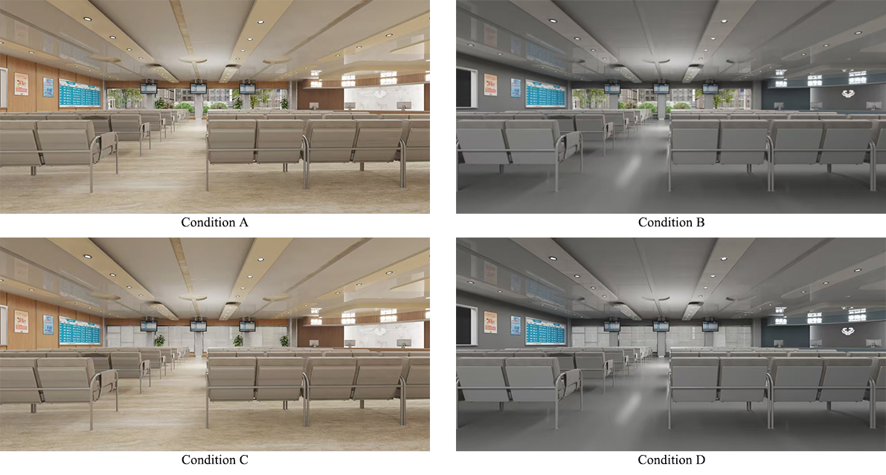
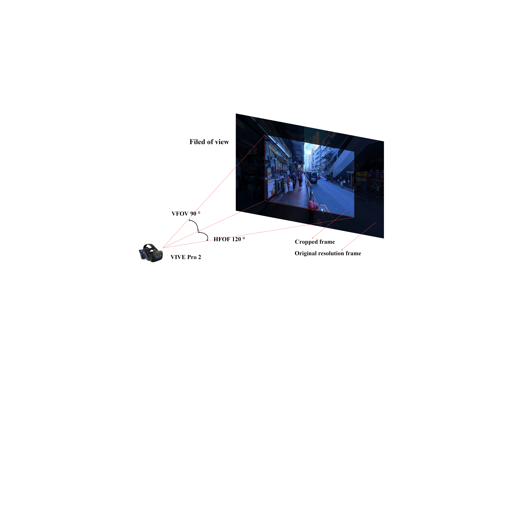
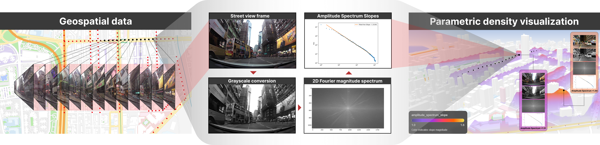
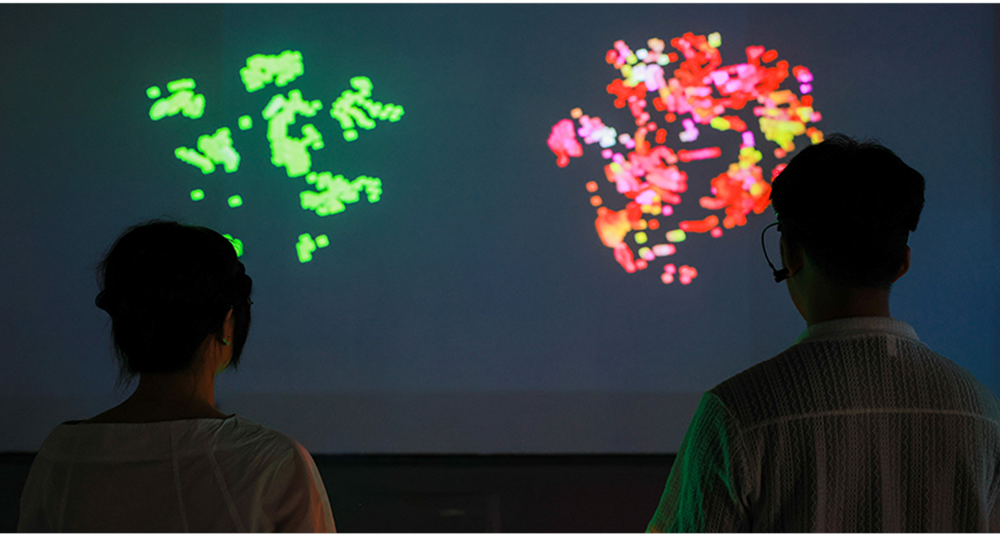
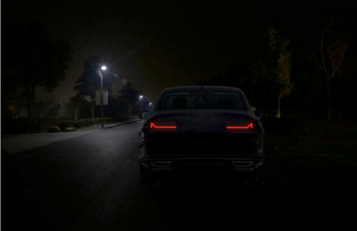
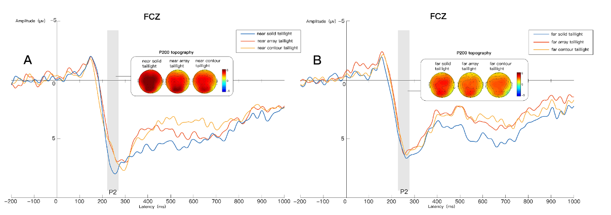
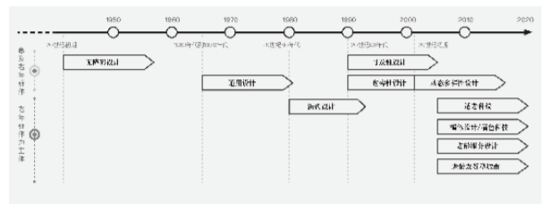
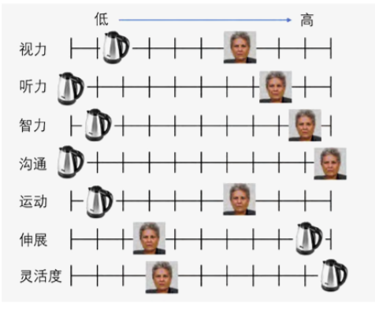

Selected for the 2026 Doctoral Student Special Plan under the Young Science and Technology Talent Cultivation Program of the China Association for Science and Technology (CAST).
入选中国科协2026年度“青年科技人才培育工程（原“青托工程”）博士生专项计划”。
PSYCHOLOGY · HCI · DESIGN
PhD Student in Intelligent Manufacturing
and Robotics (IMR)
Future Spaces Vision (FSV) Lab ↗
· School of Design
Southern University of Science and Technology (SUSTech)
Supervised by Prof. Mirna Zordan
My research bridges ergonomics, human–computer interaction, psychology, and industrial design.
I combine rigorously controlled laboratory experiments with physiological computing and the processing and analysis of behavioral and physiological data.
Bachelor of Engineering in Industrial Design · Master of Arts in Design Studies
Selected for the 2026 Doctoral Student Special Plan under the Young Science and Technology Talent Cultivation Program of the China Association for Science and Technology (CAST).
入选中国科协2026年度“青年科技人才培育工程（原“青托工程”）博士生专项计划”。







